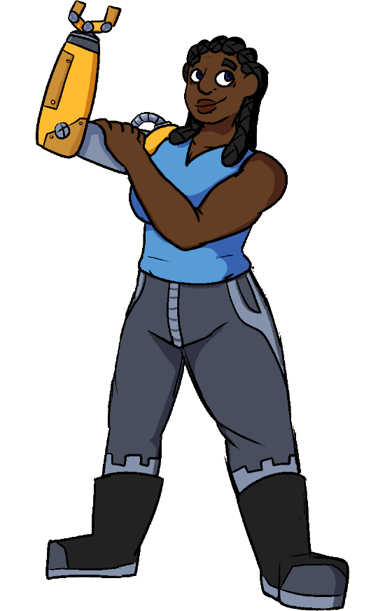

Amber
Amber | |
|---|---|
|  | |
| Full Name | Amber Melody |
| Pronouns | She/Her |
| Species | Human |
| Age | 28 |
| Height | 180cm / 5'11" |
| Occupation | Mechanic/Scrapyard Owner |
| Relationships | Iekika - Partner |
| Stuffed Animals | 26 |
| Unfinished Projects | Many |
Backstory
Amber was born in the seaside town of Magnolia. She's the odd one out among her family of artists, having chose to explore engineering instead. She'd always held a fascination with machines, spending her childhood taking apart her toys to figure out how they worked.
She was also born with a missing right arm, which combined with her interest in engineering, lead to her building a prosthetic replacement. What started as her taping a paper towel tube to her shoulder as a child eventually became a custom machined, shoulder-actuated prosthetic that saw almost daily use.
The arm got her a scholarship to a prestigious engineering school, where she thrived. After school, once the hype wore down, she realized the arm was the only real major accomplishment she'd made until then. Suddenly, everything she did in comparison felt lackluster, and so began a long spat with perfectionism.
She ended up taking ownership of the Magnolia scrapyard after graduating, having been a frequent customer in the past, where she started a workshop. To make ends meet, she did odd repair jobs and commissions for others, while trying to find her next big thing in her free time.
Over the years, she started to feel burnt out - not that she'd admit it - and things might have kept going that way if not for a weird blue creature washing ashore.
Character
Amber is friendly, clever, and a something of a perfectionist. She's always quick to offer her aid in whatever way she can - though, ideally in the form of building some elaborate machine. She recognizes her interest is a bit niche - especially in Magnolia - but will happily talk about it at length if given the oppritunity.
Machines or not, she prefers to get things right the first time. This can lead to hours or even days of planning for even the simplest things, most of that spent stuck inside her head fussing over every possible detail.
She has a habit of trying to optimize anything to its peak - be it her projects, her daily routine, even her socializing.
Outside of her work, she tries living pretty simply. She enjoys cooking, hiking, fishing, the kind of activities that need a lot less active brainpower than designing her latest Rube Goldberg machine.
Trivia
- Amber enjoys metal detecting on the beach as a hobby.
- Amber has a plushie collection she's accumulated since childhood that some members of her family have described as 'out of control'.
- Amber is transgender.